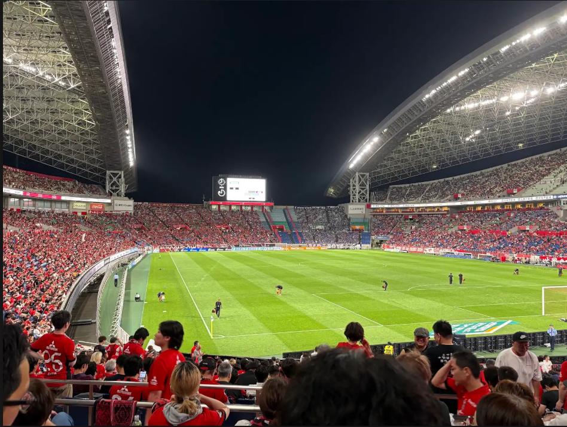
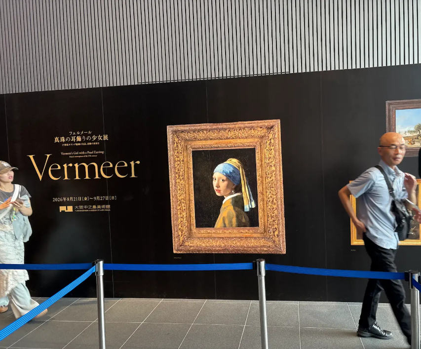

僕が夏休みに行ったところなどを紹介します。
サッカーを見に行きました。
友達と行って夜ご飯にスタジアムグルメの焼肉弁当を食べました。 とてもおいしかったです。 でも試合に負けてしまいました。 悔しかったです。 最後に友達とサッカーをして帰りました。 とても楽しかったです。

大阪に行ってフェルメールの展覧会に行きました。
フェルメールの展覧会に行くために家族で大阪へ旅行しました。 真珠の耳飾りの少女を見るためです。 お父さんが以前見たことがあり、もう一度見たいと言っていました。 たまたまチケットが当選したので行きました。 真珠の耳飾りの少女はとても綺麗でした。
